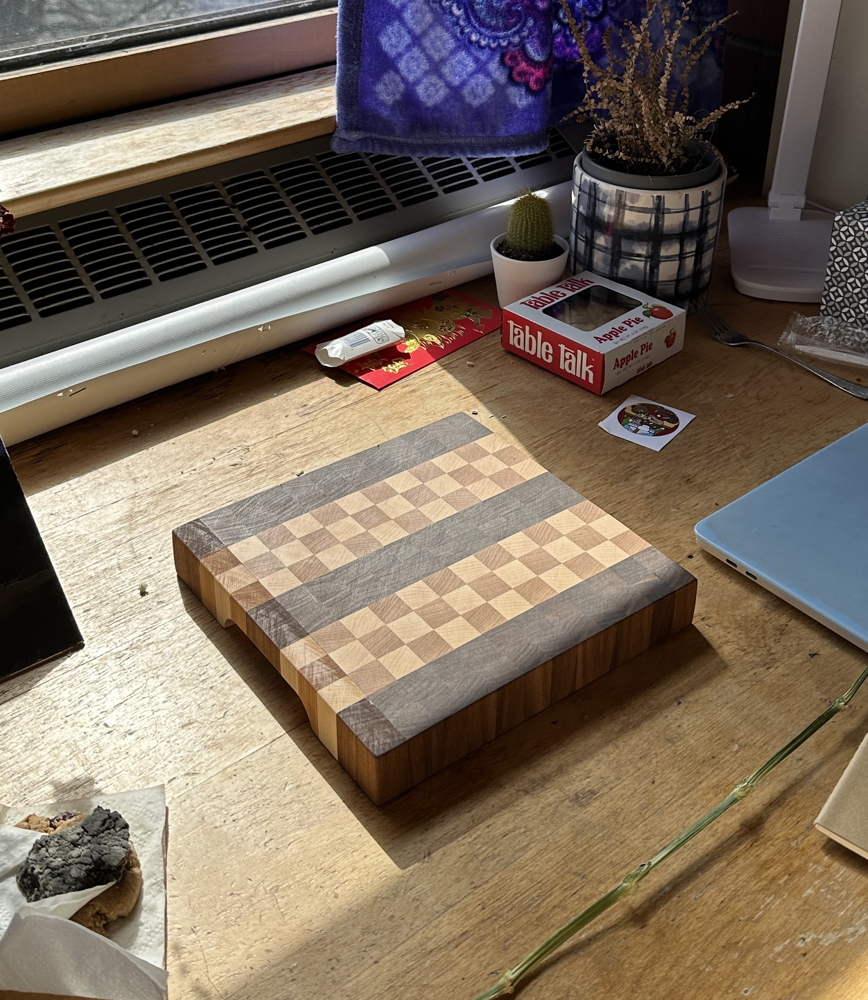
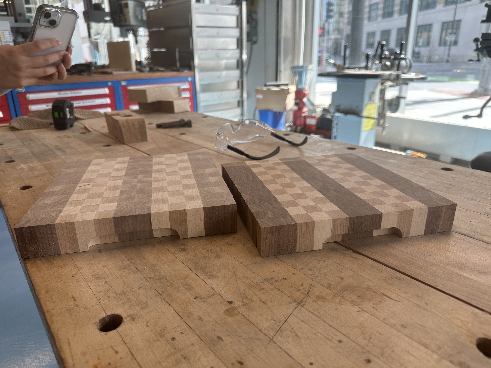
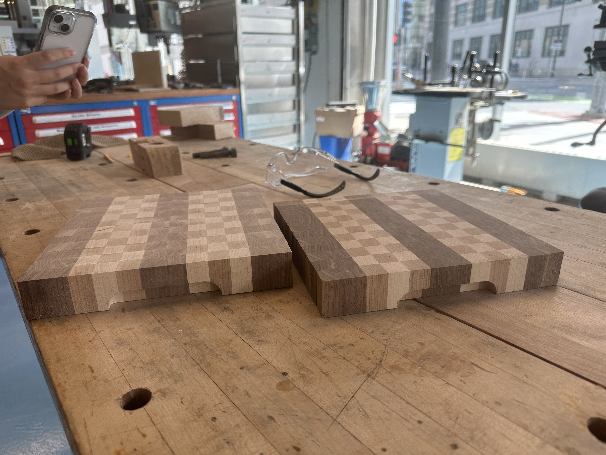
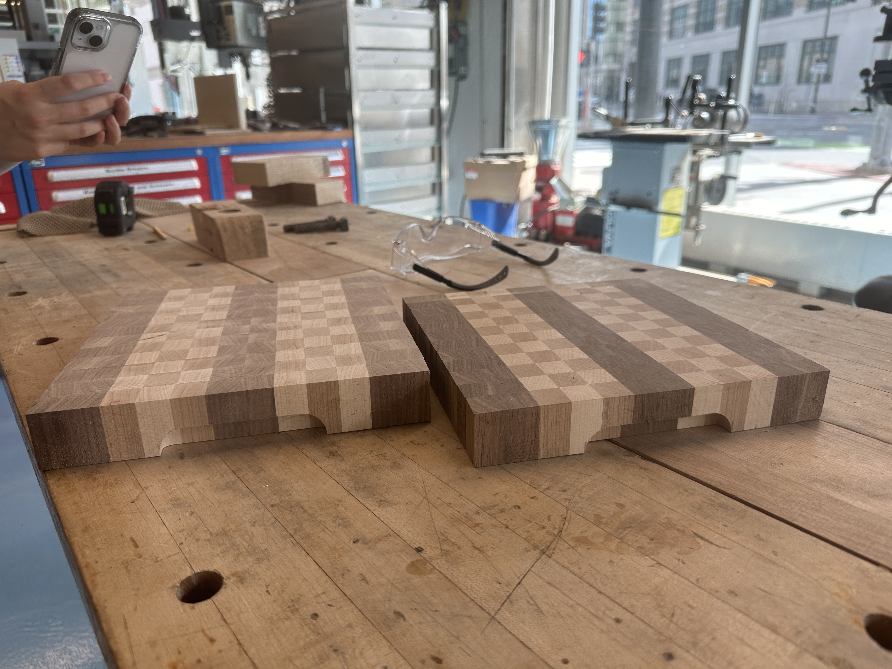
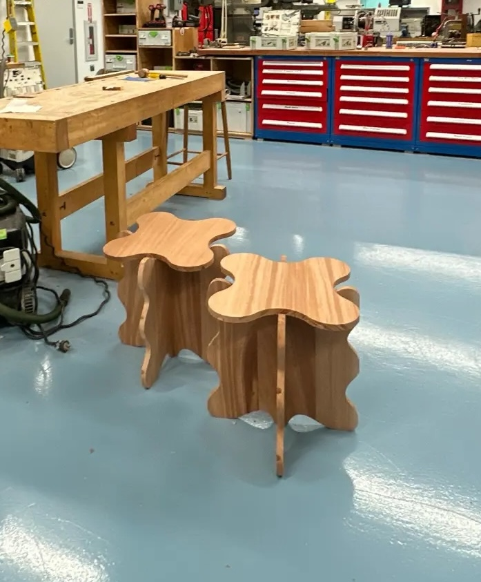

I enjoy woodworking, creative writing, and learning to DJ.
Woodworking
I started woodworking at the MIT Hobby Shop in sophomore year of undergrad with my friend Willow Huang. Though neither of us came in with any experience, we were lucky to have Coby Unger and Hayami Arakawa to mentor us through all the projects we embarked on. Here are a few:
Checkered Cutting Board

 


Butterfly Stool


Hand Carved Chopsticks

Creative Writing
I enjoy writing short stories, poems, and journalistic pieces. In addition to my blog, check out some of my writing in The Tech, MIT's student newspaper, below.
- (ARTS) Y2K, unlike its historic counterpart, is full of surprises, funny moments, and bloody endings
- (ARTS) Karissa Chen debuts her first novel, Homeseeking, at the Harvard Book Store
- (ARTS) BRED Gourmet’s Smoked Burgers Come to Kendall Square
- (NEWS) President Kornbluth addresses the Trump administration, generative AI, and future of the Institute
DJing
I am just recently learning how to DJ. Stay tuned for samples.